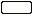

CCSM Barrierefreiheit
Dieser Artikel wurde für die folgenden Ubuntu-Versionen getestet:
Ubuntu 16.04 Xenial Xerus
Artikel für fortgeschrittene Anwender
Dieser Artikel erfordert mehr Erfahrung im Umgang mit Linux und ist daher nur für fortgeschrittene Benutzer gedacht.
Zum Verständnis dieses Artikels sind folgende Seiten hilfreich:
Der CompizConfig Einstellungs-Manager (abgeleitet aus der Paketbezeichnung nachfolgend mit "CCSM" abgekürzt) bietet umfangreiche Möglichkeiten, das Verhalten auf dem Bildschirm, das Aussehen diverser Komponenten sowie die Eingriffe durch die Tastatur und die Maus einzustellen.
Dieser Abschnitt behandelt die unter dem Thema "Barrierefreiheit" im Startbildschirm vom CCSM zusammengefassten Einstellungen. Diese Einstellungen sollen das Arbeiten von "Behinderten" am Rechner und seinen Ausgabegeräten erleichtern.
Optionen Barrierefreiheit¶
Nachfolgend ist eine Übersicht aller Beschreibungen aufgeführt, die sich mit dem Thema "Barrierefreiheit" befassen. Durch Anklicken des jeweiligen Icons bzw. des Titels gelangt man zur jeweiligen Detailbeschreibung.
| Enhanced Zoom Desktop | Farbfilter | Fensterinhalt negieren | |||
| Magnifier | Brightness und Saturation | Sichtbarkeit | |||
| Zoom Desktop | Konzentrationshilfe | Zeige Maus | |||
Beschreibungen unter Barrierefreiheit¶
Um auch die Optionen Konzentrationshilfe und Zeige Maus nutzen zu können, muss das Paket
compiz-plugins-extra (universe, [1])
 mit apturl
mit apturl
Paketliste zum Kopieren:
sudo apt-get install compiz-plugins-extra
sudo aptitude install compiz-plugins-extra
installiert sein.
Die Symbole für "Typ" in den Erläuterungen haben folgende Bedeutung:
 = Auswahl/Wechsel erfolgt durch Anklicken
= Auswahl/Wechsel erfolgt durch Anklicken = Einstellung der Tasten erfolgt in einer Auswahlbox
= Einstellung der Tasten erfolgt in einer Auswahlbox = Auswahl wird in einem "DropDown" vorgegeben
= Auswahl wird in einem "DropDown" vorgegeben= Einstellung erfolgt über einen "Schieber"
 = steht für die Eingabe eines zulässigen Textes
Hervorgehobene Werte bei den Einstellungen verweisen auf die bei der Installation vorgegebene Standardeinstellung.
Erweiterter Desktop-Zoom¶
Diese Option ist eine Sammlung von Tastaturkürzeln und Mausaktivitäten zum Hineinzoomen (Vergrößern der Darstellung) und Herauszoomen, weitere Einstellungen sowie hilfreiche Maßnahmen für "Sehbehinderte" aber auch andere Benutzer.
Die Reiter "Zoom Area Movement", "Focus Tracking" und "Animation" enthalten weitere Tastenkürzel, mit ergänzenden / eingrenzenden Einstellungen zu den Parametern in den folgenden Tabellen.
Hinweis:
Diese Option ist eine in den Funktionen erweiterte Fassung von Desktop zoomen. Man sollte vermeiden, beide Optionen gleichzeitig zu setzen.
Zoom In/Out¶
| Funktion | Typ | Beschreibung |
| "Zoom In" | | Getrennte Einstellungen zum Hineinzoomen sowohl als Tastaturkürzel als auch für den Aufruf mit der Maus. Die Einstellung erfolgt über eine Abfagebox, Standardeinstellung = "Deaktiviert" |
| "Zoom Out" | | Getrennte Einstellungen zum Herauszoomen sowohl als Tastaturkürzel als auch für den Aufruf mit der Maus. Die Einstellung erfolgt über eine Abfagebox, Standardeinstellung = "Deaktiviert" |
| "Zoom Box" | | Rufe einen Zoombereich, innerhalb eines begrenzten Bereiches auf. Die Einstellung erfolgt über eine Abfagebox, Standardeinstellung = "Deaktiviert" |
| "Zoom factor" | Geschwindigkeit mit der das Zoomen ausgeführt wird. Ein größerer Wert bedeutet höhere Geschwindigkeit, Standardwert = 1,1500 | |
| "Minimum zoom factor" | Einstellfaktor zum Zoombereich - ein Wert = 0,5 entspricht doppelten Zoom, ein Wert = 0,25 entspricht vierfachen Zoom. Standardwert = 0,125 (achtfacher Zoom) |
Verhalten Maus¶
| Funktion | Typ | Beschreibung |
| "Center the mouse" | | Tastaturkürzel um den Mauszeiger immer ins Zentrum des Bildschirmes, unabhängig vom Zoomfaktor, zu bringen |
| "Sync Mouse" | | Der gezoomte Bereich wird in Relation zur Stellung des Zeigers bewegt (und umgekehrt). Dieses sollte nicht bei skaliertem Mauszeiger angewendet werden, anderenfalls muss der original Mauszeiger ausgeblendet werden (siehe "Hide the original mouse pointer"). |
| "Scale the mouse pointer" | | Hiermit wird ein größerer, vom Zoomfaktor unabhängiger Mauszeiger eingestellt |
| "Dynamic mouse pointer scale" | | Hiermit wird die vorherige Einstellung an den Zoomfaktor fest gebunden |
| "Static mouse pointer scale" | Wird nicht die Option "Dynamic mouse pointer scale" benutzt, wird dieser Skalierungsfaktor eingesetzt. Standardwert = 0,2000 | |
| "Hide the original mouse pointer" | | Unterdrücke den Original-Mauszeiger beim Hineinzoomen oder bei der Option "Sync Mouse" |
| "Restrain the mouse to the zoom area" | | Versuche, den gezoomten Mauszeiger sichtbar zu behalten, sobald dieser außerhalb des gezoomten Bereiches gelangt |
| "Mouse panning" | | Begrenze den Zoombereich, wenn dadurch der Mauszeiger nach außerhalb, in den nicht mehr sichtbaren Bereich gelangen würde |
| "Mouse Restrain Margin" | Zusätzlicher Bereich am Rand, bevor die Option "Mouse panning" greift. Standardwert = 5 (Pixel) |
Spezific Zoom¶
| Funktion | Typ | Beschreibung |
| "Zoom Specific Level *" | | Tastaturkürzel zum direktem Aufrufen einer festen Einstellung (Level 1, 2 3) - die Einstellung erfolgt jeweils über eine Auswahlbox |
| "Specific zoom factor *" | Die Standardwert sind: Level 1 = 1,0000, Level 2 = 0,5000, Level 3 = 0,2000, | |
| "Target Focused Window on Specific level" | | Aktiviere diese Option, um das Fenster mit dem aktiven Fokus zu zoomen. Der Mauszeiger ist dabei inaktiv |
Desktop zoomen¶
Diese Option stellt eingeschränkt gleiche Funktionen bereit, die bereits durch die Option "Erweiterter Desktop Zoom" abgedeckt werden. Deshalb sollten beide Optionen nicht gleichzeitig gesetzt sein.
| Funktion | Typ | Beschreibung |
| "Initiieren" | | Getrennte Einstellungen zum Aufrufen dieser Funktion sowohl als Tastaturkürzel als auch für den Aufruf mit der Maus oder als Kombination. Die Einstellung erfolgt jeweils über eine Auswahlbox. Standardeinstellung = Windows in Kombination mit einer Taste. |
| "Zoom In" | | Getrennte Einstellungen zum Hineinzoomen sowohl als Tastaturkürzel als auch für den Aufruf mit der Maus oder als Kombination. Die Einstellung erfolgt über eine Abfragebox. Standardeinstellung = Windows in Kombination mit einer Taste. |
| "Zoom Out" | | Getrennte Einstellungen zum Herauszoomen sowohl als Tastaturkürzel als auch für den Aufruf mit der Maus oder als Kombination. Die Einstellung erfolgt über eine Abfragebox, Standardeinstellung = Windows in Kombination mit einer Taste. |
| "Zoom Pan" | | Getrennte Einstellungen zum Begrenzen des Würfels sowohl als Tastaturkürzel als auch für den Aufruf mit der Maus. Die Einstellung erfolgt über eine Abfragebox. Standardeinstellung = Windows in Kombination mit einer Taste. |
| "Geschwindigkeit" | Einstellung der Zoomgeschwindigkeit. Der Standardwert = 1,5000 | |
| "Zeitintervall" | Einstellung mit der der erneute Bildaufbau beim Zoomen geregelt wird, Standardwert = 1,2000 | |
| "Zoomfaktor" | Einstellung des Faktors, den das Zoomen erreichen soll, der Standardwert = 2,0000 | |
| "Linearer Filter" | | Das Zuschalten dieser Funkton bewirkt eine bessere Bilddarstellung beim Hineinzoomen. |
Farbfilter¶
Der Farbfilter ermöglicht Sehbehinderten, die Bildschirmdarstellung mit bestimmten Filtern zu versehen, so dass der Kontrast für verschiedene Sehbehinderungen optimiert werden kann. Die Tastaturkürzel und die Grundeinstellungen für die Farbfilter kann man den Erfordernissen anpassen.
| Funktion | Typ | Beschreibung |
| "Schaltet den Filter für das gewählte Fenster um" | | Das Setzen des Tastaturkürzels für die sequenzielle Umschaltung erfolgt in einer Auswahlbox, Standardeinstellung = Windows + F |
| "Schaltet den Filter für den gesamten Bildschirminhalt um" | | Das Setzen des Tastaturkürzels für die Umschaltung erfolgt in einer Auswahlbox, Standardeinstellung = Windows + D |
| "Filter umschalten (sequentiell)" | | Das Setzen des Tastaturkürzels für die Umschaltung erfolgt in einer Auswahlbox, Standardeinstellung = Strg + Windows + D |
| "Filterdateien erstellen und bearbeiten" | Die Schaltflächen "Neu", "Löschen", "Bearbeiten", "Hoch" und "Runter" werden zur Bearbeitung dieser Liste eingesetzt. Weitere Details / Vorgaben findet man im Compiz-Wiki  | |
| "Fensterrahmen filtern" | | Fensterrahmen werden zusammen mit dem Fensterinhalt gefiltert |
| "Gefilterte Fenster" | Das Setzen von einzelnen Fenstern erfolgt in einer Liste, Standardeinstellung: "any" (alle) | |
| "Fenster ausschließen" | - Fenstertypen, die von der Filterung ausgeschlossen werden sollen. Standardeinstellung: "type=Desktop" |
Vergrößerung¶
Hiermit wird eine "Lupenfunktion" aufgerufen, d.h. ein abgegrenzter Bereich wird für die Funktion bereitgestellt. Mit der Maus wird der Lupenbereich zum Zielbereich geführt, um dort eine Vergrößerung zu bewirken.
Lupe Bindings¶
| Funktion | Typ | Beschreibung |
| "Einleiten / Beenden" | | Tastaurkürzel zum Aufrufen / Einleiten der Funktion Vergrößerung in einem abgegrenzten Bereich. Standardeinstellung = Windows + M |
| "Maustaste für Zoom In" | | "Zoom In" ausführen mit einer Tastatur-Maus-Kombination. |
| Standardeinstellung = ⇧ + Windows gedrückt halten und mit Scrollrad: vor = Darstellung größer | ||
| "Maustaste für Zoom Out" | | "Zoom Out" ausführen mit einer Tastatur-Maus-Kombination. |
| Standardeinstellung = ⇧ + Windows gedrückt halten und mit Scrollrad: zurück = Darstellung kleiner |
Lupe Allgemeine Einstellungen¶
Die Basiseinstellungen für den jeweiligen Modus (der Vergrößerung) können innerhalb dieser Maske getrennt eingestellt werden.
| Funktion | Typ | Beschreibung |
| "Modus (Vergrößerung)" | | Es sind drei Modi auswählbar. Deren Parameter jeweils getrennt einstellbar sind. Vorgegebene Modi sind: "Simple", "Image overlay", "Fisheye" |
| "Maustaste für "Zoom" | Einstellung des Startfaktors nach dem Aufruf mit Windows + M . Standardwert = 2,0000 | |
| "Speed (Vergrößerung)" | Einstellung der Geschwindigkeit nach dem Aufruf mit Windows + M . Standardwert = 1,5000 | |
| "Timestep (Zeitsprung)" | Einstellung, mit der die Bilddarstellung bei Veränderung neu aufgebaut wird. Standardwert = 1,2000 |
Fensterinhalt umkehren¶
Mit dieser Funktion werden die Darstellung auf dem Monitor "farbverkehrt" abgebildet.
| Funktion | Typ | Beschreibung |
| "Schalter negatives Fenster" | | Tastaturkürzel zum Aufrufen der Farbumkehrung (Negativeffekt) eines Fensters, die Einstellung erfolgt jeweils über eine Auswahlbox. |
| Die Standardeinstellung ist Windows + N | ||
| "Schalter negativer Bildschirm" | | Tastaturkürzel zum Aufrufen der Farbumkehrung (Negativeffekt) des Bildschirmes, die Einstellung erfolgt jeweils über eine Auswahlbox. |
| Die Standardeinstellung ist Windows + M | ||
| "Negierte Fenster" | Liste mit Fenstern (Positivliste). Die Standardeinstellung ist "any" (alle) | |
| "Ausgenommene Fenster" | Liste mit Fenstern (Negativliste). Die Standardeinstellung ist "type=Desktop" | |
| "Negiere Dekoration" | | Negiere auch die Fensterdekoration, nicht nur den Fensterinhalt |
Sichtbarkeit¶
Mit dieser Option kann man bei Fenstern auf der Arbeitsfläche die Eintrübung durch Überfahren mit der Maus verändern. Die Grundeinstellung der Eintrübung der Fensters bleibt dabei erhalten. Die Standardeinstellung zum Ein-/Ausschalten dieser Option ist Windows + O und kann unter dem Reiter "Bindings" in einer Auswahlbox geändert werden.
Der Reiter "Verschiedene Optionen" enthält eine Vielzahl von speziellen Einstellungen zum Verhalten und/oder Begrenzung/Ausgrenzung von Fenstern und deren Hervorhebung (aus der Eintrübung). Diese Optionen stellen eine Ergänzung der folgenden Option Helligkeit und Kontrast dar und können erst mit den folgenden Einstellungen zusammen, sinnvoll angewendet werden.
Helligkeit und Kontrast¶
Mit dieser Option werden die Grundeinstellungen (verschiedene Reiter) für die Eintrübung (Durchsichtigkeit), die Helligkeit und die Farbsättigung vorgenommen. Desweiteren kann bestimmt werden, mit welcher Maus- bzw. Tastenkürzel oder Kombination aus beiden, diese Einstellungen aktiviert bzw. ausgeschaltet werden. Alle drei Reiter haben intern gleiche Funktionen (in der Tabelle ersetzt durch "**").
| Funktion | Typ | Beschreibung |
| "Increase **" | | "Verstärken": Tastaturkürzel zum Erhöhen der Eintrübung (bzw.: Helligkeit, Farbsättigung). Die Einstellung erfolgt jeweils über eine Auswahlbox. |
| "Increase **" | | "Verstärken": Mausknopf zum Erhöhen der Eintrübung (bzw.: Helligkeit, Farbsättigung). Die Einstellung erfolgt jeweils über eine Auswahlbox. |
| "Decrease **" | | "Abschwächen": Tastaturkürzel zum Abschwächen der Eintrübung (bzw.: Helligkeit, Farbsättigung). Die Einstellung erfolgt jeweils über eine Auswahlbox. |
| "Decrease **" | | "Abschwächen": Mausknopf zum Abschwächen der Eintrübung (bzw.: Helligkeit, Farbsättigung). Die Einstellung erfolgt jeweils über eine Auswahlbox. |
| "Step" | "Schrittweite" beim Erhöhen oder Abschwächen der Eintrübung (bzw.: Helligkeit, Farbsättigung) mit dem relevanten Tastenkürzel / Mausknopf. Der Standardwert ist 5 | |
| "Window specific settings" | "Spezielle Fenstereinstellungen": Eine Liste zum gezielten Eintragen von Fenstern und deren speziellen Parametern |
Konzentrations-Hilfe¶
Mit Hilfe dieser Option kann man die Konzentration auf das aktive Fenster erhöhen, indem alle anderen Fenster auf der Arbeitsfläche abgedimmt und/oder auch durchsichtig werden. Die Standardeinstellung zum Ein-/Ausschalten dieser Option ist Windows + P . Diese Einstellung kann unter dem Reiter "Bindings" in einer Auswahlbox geändert werden. Die "weiteren Optionen" sind in der folgenden Tabelle aufbereitet:
Diverse Optionen¶
| Funktion | Typ | Beschreibung |
| "Windows Typs" | Eine Liste der Fenstertypen, die hierunter fallen | |
| "Enable AAD Helper on start" | | Bestimmt das dieser Modus gleich beim Start eingeschaltet wird. Alternativ gilt die Regel mit der Tastenkombination Windows + P |
| "Brightness" | Stellt die Helligkeit ein, bis auf die abgedimmt wird. Standardwert = 30 (%) | |
| "Saturation" | Stellt die Farbsättigung ein, bis auf die abgedimmt wird. Standardwert = 50 (%) | |
| "Opacity" | Stellt die Transparenz ein, bis auf die abgedimmt wird. Standardwert = 100 (Werte in %, keine Transparenz = 100, ganz durchsichtig = 0) |
Zeige Maus¶
Mit Hilfe dieser Option kann man die Sichtbarkeit bzw. das Finden des Mauszeigers steigern, indem um den Mauszeiger ein rotierender Kreis gezeichnet wird. Unter dem Reiter "Particle Options" werden die diversen Parameter zum Kreismuster eingestellt.
Kreismuster Allgemein¶
| Funktion | Typ | Beschreibung |
| "Initiate (Taste)" | | "Einschalten": Tastaturkürzel um diese Funktion zu aktivieren bzw. wieder auszuschalten. Die Einstellung erfolgt jeweils über eine Auswahlbox und die Standardeinstellung ist Windows + K |
| "Initiate (Maus)" | | "Einschalten": Mausknopf um diese Funktion zu aktivieren bzw. wieder auszuschalten. Die Einstellung erfolgt jeweils über eine Auswahlbox und eine Standardeinstellung ist "Deaktiviert" |
| "Initiate (Bildschirmrand)" | | "Einschalten": Den Mauszeiger auf einen Bildschirmrand führen, um diese Funktion zu aktivieren bzw. wieder auszuschalten. Die Einstellung erfolgt jeweils über eine Auswahlbox und die Standardeinstellung ist "Nichts" |
| "Rotation speed" | "Drehgeschwindigkeit": Hiermit kann die Geschwindigkeit eingestellt werden, mit der das Kreismuster um den Mauszeiger bewegt wird. Standardwert = 0,500 U/sek | |
| "Radius" | Hiermit kann man die Größe des Kreismusters einstellen, das um den Mauszeiger bewegt wird, Standardwert = 100 Pixel | |
| "Emiters" | "Ausstrahlung": Hiermit wird die Intensität des Kreismusters bestimmt. Standardwert = 3 |
Links¶
Intern¶
 Plugins - eine Übersicht zu den Compiz-Plugins
Plugins - eine Übersicht zu den Compiz-PluginsCCSM Allgemein - Einstellungen unter "Allgemein"
CCSM Arbeitsfläche - Einstellungen für die Arbeitsflächen und deren Erscheinungsbild
CCSM Effekte - Effekte rund um die Fenster
CCSM Sonstiges - Sonstiges Einstellungen
CCSM Bildverarbeitung - Einstellungen zur Bildverarbeitung
CCSM Werkzeuge - Werkzeuge und Hilfsmittel, alles was man braucht
CCSM Fensterverwaltung - Fensterverwaltung, wie man die Fenstern aufleben lässt
CCSM Ohne Kategorie - Ohne Kategorie, Internas zur Fehlersuche
Compiz - ein Composite- und Fenstermanager
Compiz CCSM - das Werkzeug, um Compiz-Plugins einzustellen und nutzbar zu machen
CCSM Benutzung - wie die Plugins mit dem CCSM bearbeitet werden
- Erstellt mit Inyoka
-
 2004 – 2017 ubuntuusers.de • Einige Rechte vorbehalten
2004 – 2017 ubuntuusers.de • Einige Rechte vorbehalten
Lizenz • Kontakt • Datenschutz • Impressum • Serverstatus -
Serverhousing gespendet von